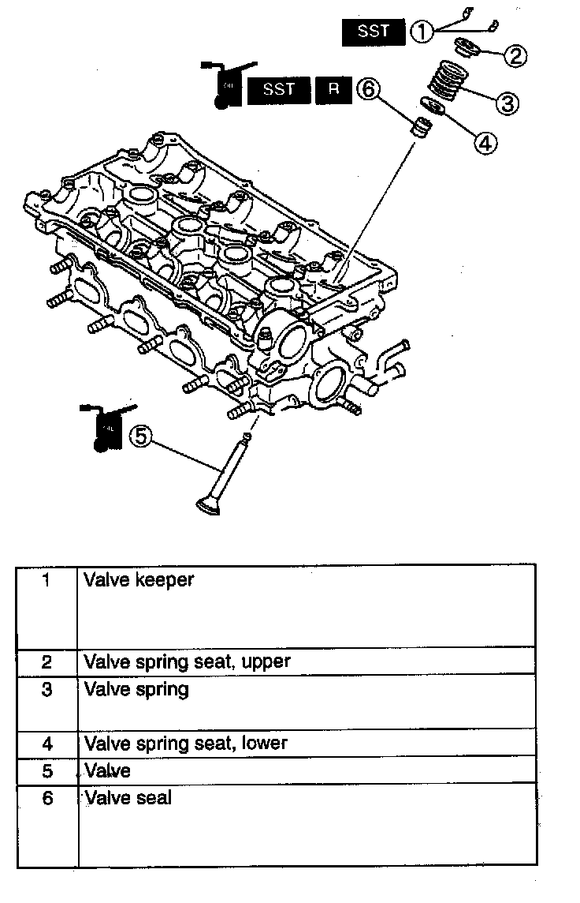
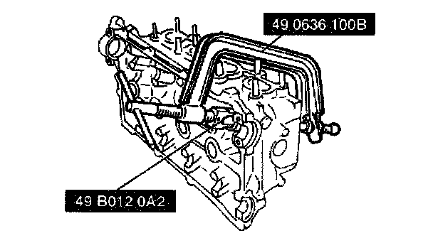
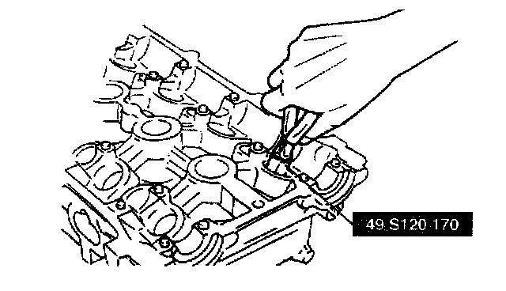
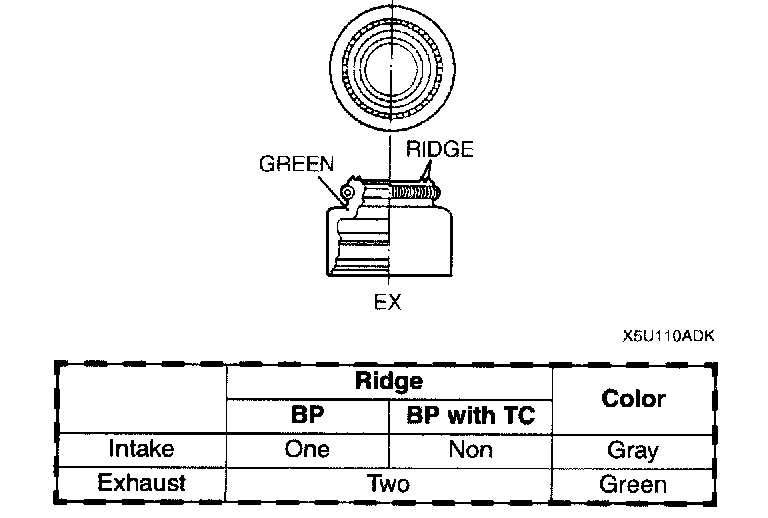
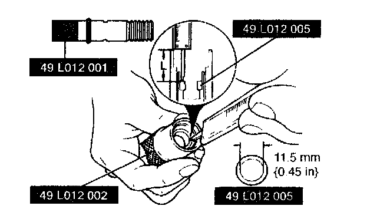
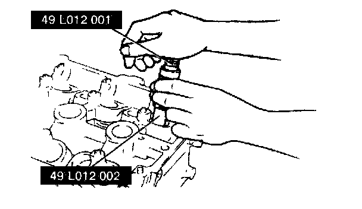
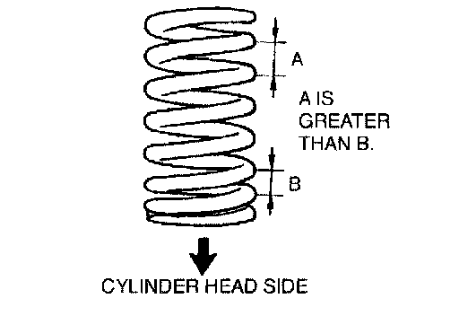
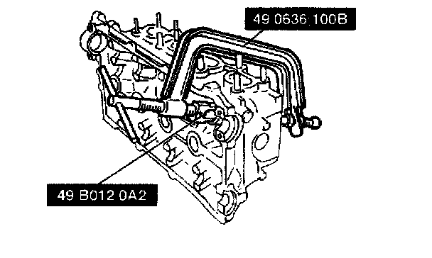

Cylinder Head (II)
Cylinder Head Disassembly/Assembly (II)
1. Disassemble in the order indicated in the table.

2. Assemble in the reverse order of disassembly.
Valve keeper disassembly note

^ Remove the valve keeper using the SST.
Valve seal disassembly note

^ Remove the valve seal using the SST
Valve seal assembly note

Note:
^ The intake and exhaust valve seals are different.

1. Assemble the SST so that depth L is as specified.
Depth L 19.9 mm (0.783 inch)
2. Press the valve seal onto the valve guide by hand.

3. Tap the SST by using a plastic hammer until its lower end touches the cylinder head.
Valve spring assembly note

1. Install the valve spring with the closer pitch toward the cylinder head.
Valve keeper assembly note

1. Install the valve keeper by using the SST.